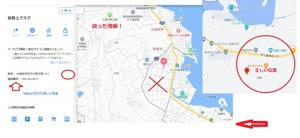

うるがいの話 ある日
最新: カーナビの目的地【うるがいの話 ある日】とは 一日だけのプログです
『うるがいの話』の最新一日だけのプログで、通信料が少なく経済的だ。カニの画像をクリックすると全ての日付が載る『うるがいの話』サイトを表示します
|
|
【うるがいの話】 うるがい(ｳﾙｶﾞｲ urugai)とは、『もずくがに』の名前でとても大きくなります。 |
|---|---|
|
|
【カミマヤーの話】 猫のことを方言でマヤーといいます。カミマヤー（kamimayaa）とは、神の猫のことです。 |
|
【たながぁの音楽】 たながぁ（ﾀﾅｶﾞｰ tanagaa）とは手長えびのことで、何種類かあり大きいのは車 エビぐらいになります。 |

|
【ぶながぁの話】 ぶながぁ(ﾌﾞﾅｶﾞｰ bunagaa)とは、赤い髪の毛、赤い身体、そして身長は１ｍ２０ｃｍ ぐらい、川の蟹を食べているの目撃された。場所は沖縄県国頭郡大宜味村のと ある村僕の隣近所に住んでいる爺さんから、聞いた話です。 |
|
|
【ギーマの話】 ギーマ(giima)とは、山原の里山に咲くスズランに似た、 花を付けます。実は食べられます、 気が付くと口の周りが紫になっています。 |
2022年09月14日 (水）カーナビの目的地
15:15
バイクで霊地１４箇所巡りを行うにあたり、いいアイデアを思いつきこの前実
践してみた。スマホのカーナビの音声を、Bluetoothワイヤレスイヤフォンで
聴いて運転すること。効果、バッチシ、地図は見れないが音声だけで、２か所
はスムーズに行けた。ただし、５佐敷上(さしきうぃ)グスクは、スマホのカー
ナビアプリで事前に登録した地図が誤りがあるのか、事前に調べていたところ
と違うコースを案内された。すぐさま、頭にある地図で目的にたどり着いた。
改めと違いを調べると、目的地の検索に番地でなく名称を選択し、それが誤っ
た地図の場所を示していた。ただし、そこで表示されている住所は正しいもの
が載っている。んー、困ったもんだ、事前に地図が本当に正しいか十分に確認
が必要と体感する。

歯医者の予約１１時半に間に合わせて受付に行くと、１０時半でした！と言わ
れる。え！、この前電話で予約日を変更したときに、聞き間違えたのか？。結
局１０月に予約を変更した、トホホ、次からは事前に電話で確認することにし
よう。それにしてもボケたか、３日前から叔父さんのヨメさんの名前が、思い
だせなくショックだった・・・、やっと午前に名前を思い出した。パソコンに
記録する。
１５時０８分 ビットコインの総資産 ￥８、４４４↓（急落）